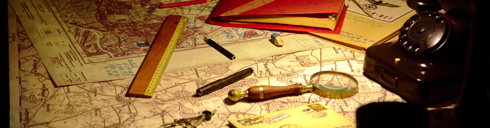

Readings
 photo by Filip Sutkowy, unsplash.com
I would like to acknowledge that some of this list was put together using the resources collected at La Tanya Autry, et al, “Social Justice & Museums Resource List,” crowdsourced document, Dec 4, google doc.
Also, you might enjoy looking at the materials from the annual Museums and the Web conference here, to round out your interests.
I’m not expecting you to read all of this!! Go doublecheck coursework again if you’re not clear.
And I’ll probably add more materials.
1.1 Cultural Heritage and its Institutions
Abt, Jeffrey. 2008. ‘The Origins of the Public Museum’ in Sharon Macdonald, ed. ‘Companion to Museum Studies’. Available online from Macodrum Library.
Bennett, Tony. 1990. “The Political Rationality of the Museum,” Continuum: The Australian Journal of Media and Culture 2, no. 1 (1990), http://wwwmcc.murdoch.edu.au/ReadingRoom/3.1/Bennett.html.
Daniel Buren, 1973. “Function of the Museum,” Artforum XII, September 1973, 68. https://tinyurl.com/ydbl2rwn http://faculty.winthrop.edu/stockk/contemporary%20art/Buren%20museum.pdf
Hooper-Greenhill, Eilean. 1990. “The Space of the Museum,” Continuum: The Australian Journal of Media and Culture 3, no. 1 (1990), http://wwwmcc.murdoch.edu.au/ReadingRoom/3.1/Hooper.html
1.2 Legal, Ethical Frameworks for Cultural Heritage
Besterman, Tristram. 2008. ‘Museum Ethics’ in Sharon Macdonald, ed. ‘Companion to Museum Studies’. Available online from Macodrum Library
Gerstenblith, Patty. 2008. ‘Museum Practice: Legal Issues’ in Sharon Macdonald, ed. ‘Companion to Museum Studies’. Available online from Macodrum Library
Kreps, Christina. 2008. ‘Non-western Models of Museums and Curation in Cross-cultural Perspective’in Sharon Macdonald, ed. ‘Companion to Museum Studies’. Available online from Macodrum Library.
1.3 Collectors and Collecting
Bivens, Joy, and Ben Garcia, Porchia Moore, nikhil trivedi, Aletheia Wittman. 2019. ‘Collections: How We Hold the Stuff We Hold in Trust’ in MASSAction, Museums As Site for Social Action, toolkit, https://static1.squarespace.com/static/58fa685dff7c50f78be5f2b2/t/59dcdd27e5dd5b5a1b51d9d8/1507646780650/TOOLKIT_10_2017.pdf
MacDonald, Sharon. 2008. “Collecting Practices” in Sharon Macdonald, ed. ‘Companion to Museum Studies’. Available online from Macodrum Library
Sentance, Nathan mudyi. 2018. “Why Do We Collect,” Archival Decolonist blog, August 18, 2018, https://archivaldecolonist.com/2018/08/18/why-do-we-collect/
1.4 Informatics and Organizing Cultural Heritage
Lincoln, Matthew D. “Some problems with GLAM data on GitHub.” Matthew Lincoln, PhD (blog), 06 Jan 2016, https://matthewlincoln.net/2016/01/06/some-problems-with-glam-data-on-github.html.
Marty, Paul, and Boyd Rayward. 2005. Museum Informatics in Annual Review of Information Science and Technology 37(1):259-294 · January 2005. pdf available at https://www.researchgate.net/publication/220141970_Museum_Informatics
Sigmond, Cathy. 2019. “Calm Technology in Museums” in Humanizing the Digital https://ad-hoc-museum-collective.github.io/humanizing-the-digital/chapters/2/
2.1 Ownership and Authority
Lashaw, Christine and Evelyn Orantes. 2019. “Sharing Authority: Creating Content and Experiences” in MASSAction, Museums As Site for Social Action, toolkit, https://static1.squarespace.com/static/58fa685dff7c50f78be5f2b2/t/59dcdd27e5dd5b5a1b51d9d8/1507646780650/TOOLKIT_10_2017.pdf
2.2 Preservation & Curation
Hennessy, Kate, Dave Schaepe, Natasha Lyons, Aynur Kadir, Reese Muntean, Clarence Pennier, Michael Blake. 2018. Collaborative digital curation and recursive publics: The making of Sq’éwlets: A Stó:lō-Coast Salish Community in the Fraser River Valley. https://mw18.mwconf.org/paper/collaborative-digital-curation-and-recursive-publics-the-making-of-sqewlets-a-stolo-coast-salish-community-in-the-fraser-river-valley/
Houghton, Bernadette. 2016. Preservation Challenges in the Digital Age. D-Lib Magazine July/August 2016. 22:7⁄8 http://www.dlib.org/dlib/july16/houghton/07houghton.html
CHIN Digital Preservation Case Study – 8th Hussars Museum. Government of Canada. https://www.canada.ca/en/heritage-information-network/services/digital-preservation/hussars-museum-study.html
2.3 Interpretation
Anderson, Annie, and Ashley Rogers, Emily Potter, Elon Cook, Karleen Gardner, Mike Murawski, Swarupa Anila, and Alyssa Machida. 2019. “Interpretation: Liberating the Narrative” in MASSAction, Museums As Site for Social Action, toolkit, https://static1.squarespace.com/static/58fa685dff7c50f78be5f2b2/t/59dcdd27e5dd5b5a1b51d9d8/1507646780650/TOOLKIT_10_2017.pdf
Canning, Erin. 2019. Affect in Information Systems: A Knowledge Organization System Approach to Documenting Visitor-Artwork Experiences. Museums and the Web https://mw19.mwconf.org/paper/affect-in-information-systems-a-knowledge-organization-system-approach-to-documenting-visitor-artwork-experiences/
2.4 Online Exhibits: Cooked Data
Drucker, Johanna. 2011. Humanities Approaches to Graphical Display. DHQ. http://www.digitalhumanities.org/dhq/vol/5/1/000091/000091.html
Trofanko, Brenda. 2014.“Reconsidering the Educational Promise of Public History Exhibits” in K. Kee, ed. Pastplay. https://www.jstor.org/stable/j.ctv65swr0.16
Warren, Rob, David Evans, Minsi Chen, Mark Farrell, Daniel Mayles. 2015. Data-driven Enriched Exhibits Using Augmented Reality Museums in the Web https://mw2015.museumsandtheweb.com/paper/data-driven-augmented-reality-for-museum-exhibits-and-lost-heritage-sites
Wong, Amelia. 2015. The Whole Story, and Then Some: ‘Digital Storytellin’ in Evolving Museum Practice Museums in the Web https://mw2015.museumsandtheweb.com/paper/the-whole-story-and-then-some-digital-storytelling-in-evolving-museum-practice
2.5 APIs and Catalogues: Raw Data?
Hogarty, Sarah Bailey, Keir Winesmith, Matthew Hrudka, Beth Schechter. 2015. Art + Data: Building the SFMOMA Collection API Museums and the Web https://mw2015.museumsandtheweb.com/paper/art-data-building-the-sfmoma-collection-api/
Morgan, Richard. 2009. What is Your Museum Good at, and How Do You Build an API for It? Museums and the Web https://www.museumsandtheweb.com/mw2009/papers/morgan/morgan.html
Moskvin, Illya, and nikhil trivedi. 2019. Building a Data Hub: Microservices, APIs, and System Integration at the Art Institute of Chicago Museums and the Web https://mw19.mwconf.org/paper/building-a-data-hub-microservices-apis-and-system-integration-at-the-art-institute-of-chicago/
2.6 Metadata & Paradata
Gilliland, Anne J. 2016.‘Setting the Stage’ in Murtha Baca, ed. Introduction to Metadata 3rd edition https://www.getty.edu/publications/intrometadata/setting-the-stage/
Woodley. Mary S. 2016. ‘Metadata Matters: Connecting People and Information’ in Murtha Baca, ed. Introduction to Metadata 3rd edition https://www.getty.edu/publications/intrometadata/metadata-matters/
Practical Principles for Metadata Creation and Maintenance https://www.getty.edu/publications/intrometadata/practical-principles/
London Charter http://www.londoncharter.org/principles/documentation.html
2.7 Linked Open Data
Oomen, Johan and Lotte Belice Baltussen. 2012. Sharing cultural heritage the linked open data way: why you should sign up Museums and the Web https://www.museumsandtheweb.com/mw2012/papers/sharing_cultural_heritage_the_linked_open_data
Newbury, David. 2017. Art Tracks: Using Linked Open Data For Object Provenance In Museums. Museums and the Web. https://mw17.mwconf.org/paper/art-tracks-using-linked-open-data-for-object-provenance-in-museums/
Tallon, Loic. 2019. Sparking Global Connections to Art through Open Data and Artificial Intelligence https://www.metmuseum.org/blogs/now-at-the-met/2019/met-microsoft-mit-art-open-data-artificial-intelligence
Villaespesa, Elena. 2019. Museum Collections on Wikipedia: Opening Up to Open Data Initiatives. Museums and the Web https://mw19.mwconf.org/paper/museum-collections-on-wikipedia-opening-up-to-open-data-initiatives/
https://pro.europeana.eu/page/issue-7-lodlam
https://www.europeana.eu/portal/en
3.1 Social Media & Audience Research, Ethics & Practice
Byrd-McDevitt, Lori. 2019. “Reimagining Social Influencers through an Invitation Culture” in Humanizing the Digital https://ad-hoc-museum-collective.github.io/humanizing-the-digital/chapters/3/
Hooper-Greenhill, Eileen. 2008. “Studying Visitors” in Sharon Macdonald, ed. ‘Companion to Museum Studies’. Available online from Macodrum Library
Rao, Seema. 2017. Interstitial Spaces: Social Media As A Tool For Community Engagement Museums and the Web https://mw17.mwconf.org/paper/interstitial-spaces-social-media-as-a-tool-for-community-engagement/
3.2 Web Archives
Coffey, Mark, Alan Watts, Duane Degler. 2018. Archives strengthening historical narratives: Sharing digital and linked data resources for broader reach and sustainability. Museums and the Web. https://mw18.mwconf.org/paper/archives-strengthening-historical-narrative-sharing-digital-and-linked-data-resources-for-broader-reach-and-sustainability
Ian Milligan, Nathalie Casemajor, Samantha Fritz, Jimmy Lin, Nick Ruest, Matthew S. Weber, and Nicholas Worby. 2019. “Building Community and Tools for Analyzing Web Archives through Datathons.”” Proceedings of the ACM/IEEE Joint Conference on Digital Libraries, 19: 265-268. https://cs.uwaterloo.ca/~jimmylin/publications/Milligan_etal_JCDL2019.pdf
3.3 Computational Creativity
Compton, Kate. ‘Generominos’ http://www.galaxykate.com/generominos/
Weinard, Chad. 2019. Data as Medium. https://medium.com/@caw_/data-as-medium-361814dba6a9
Whitelaw, Mitchell. 2014. GENERATIVE HERITAGE - NOTES ON SUCCESSION the teeming void https://teemingvoid.blogspot.com/2014/12/generative-heritage-notes-on-succession.html
Woolf, Max. 2019. Experiments with Making Convincing AI-Generated Fake News https://minimaxir.com/2019/09/ctrl-fake-news/
Issue 44. Digital Creativity in Archaeology Internet Archaeology http://intarch.ac.uk/journal/issue44/
4.1 Budgeting and Bookkeeping
Skinner, Sarah J., Robert B. Ekelund, and John D. Jackson. “Art Museum Attendance, Public Funding, and the Business Cycle.” The American Journal of Economics and Sociology 68, no. 2 (2009): 491-516. www.jstor.org/stable/27739781.
Toepler, Stefan. “Caveat Venditor? Museum Merchandising, Nonprofit Commercialization, and the Case of the Metropolitan Museum in New York.” Voluntas: International Journal of Voluntary and Nonprofit Organizations 17, no. 2 (2006): 99-113. www.jstor.org/stable/27928011.
4.2 Marketing Heritage
Masri, Layla, Emily Grossman. 2010. Pimp My Site Architecture: Reorganization and Usability Tools and Tactics to Reinvigorate Museum Web Sites on a Budget Museums and the Web https://www.museumsandtheweb.com/mw2010/papers/masri/masri.html
Naiditch, Mara, Rachel Gertz, Edgar Chamorrro. 2017. How Do You Museum?: Marketing User-Generated Content To Engage Audiences? Museums and the Web https://mw17.mwconf.org/paper/how-do-you-museum-marketing-user-generated-content-to-engage-audiences/
Van Broekhoven, Laura N. K. “Calibrating Relevance at the Pitt Rivers Museum.” In Dethroning Historical Reputations: Universities, Museums and the Commemoration of Benefactors, edited by Pellew Jill and Goldman Lawrence, 65-80. London: School of Advanced Study, University of London, 2018. http://www.jstor.org/stable/j.ctv512v68.12
Vet, Marthe. 2006. Buzz and Viral Marketing as a PR Tool for Museums: A Dutch Case Study. Museums and the Web https://www.museumsandtheweb.com/mw2006/papers/devet/devet.html
4.3 Measuring Engagement & Analytics
Seneler, Cagla. 2017. The Effects Of Learning Styles And Cultural Background On Understanding The Information Architectures (IAs) Of Information Rich Websites Museums and the Web https://mw17.mwconf.org/paper/the-effects-of-learning-styles-and-cultural-background-on-understanding-the-information-architectures-ias-of-information-rich-websites/
Kelly, Lynda. 2016. The (post) digital visitor: What has (almost) twenty years of museum audience research revealed? Museums and the Web https://mw2016.museumsandtheweb.com/paper/the-post-digital-visitor-what-has-almost-20-years-of-museum-audience-research-revealed